Tus mods.
Tus mundos.
Un solo launcher.
Nova Launcher organiza tus instancias de Minecraft Java: instalá mods, importá los que ya tenés, guardá respaldos verificados y armá tu propio servidor para jugar con amigos. Y si también jugás Roblox, lo abrís desde el mismo lugar.
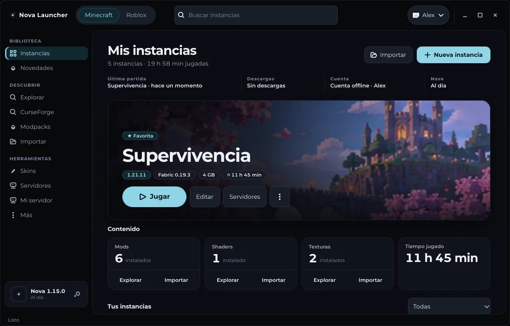
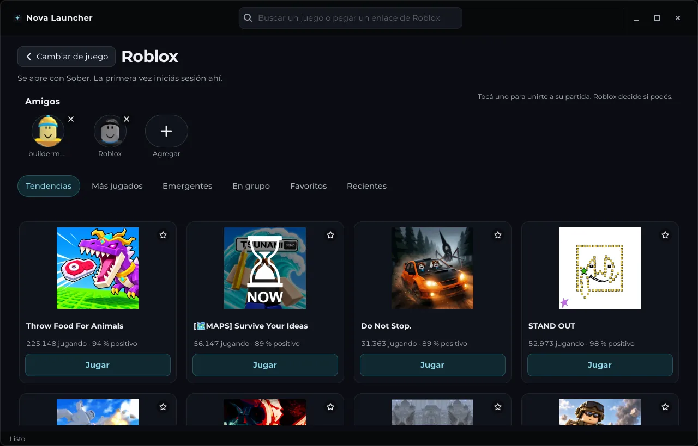
- Minecraft y Robloxelegís a qué jugar al abrir
- Tu propio servidorVanilla, Paper, Fabric o Forge, gratis
- Modrinth, CurseForge y tu equipomods, modpacks, shaders y texturas
- Windows x64 y Fedorainstaladores con SHA-256
PROBALO
Tocá el launcher, sin instalar nada
Esta maqueta funciona de verdad: cambiá entre Minecraft y Roblox, tocá Jugar, instalá un mod, pintá una skin o probá el tema claro y las velocidades de animación. Los datos son de ejemplo.
ROBLOX
Minecraft y Roblox, en un solo launcher
Al abrir Nova elegís a qué querés jugar. Con Roblox explorás los juegos del momento, elegís un servidor, entrás directo al juego y te unís a tus amigos, sin pasar por el navegador.
- Explorar
- Tendencias, Más jugados, Emergentes y En grupo
- Buscar
- por nombre, o pegando el enlace de un juego de roblox.com
- Jugar
- abre ese juego con Sober en Linux, o con el cliente oficial en Windows y Mac
- Servidores
- los servidores públicos de cada juego, con jugadores y ping, para unirte a uno
- Amigos
- una fila arriba con tus amigos: tocás uno para unirte a su partida
- Tuyos
- favoritos con una estrella y los últimos juegos que abriste
- Podés iniciar sesión con la página oficial de Roblox para ver tu nombre y tu avatar en Nova. Es opcional y Nova no ve tu contraseña.
- La lista de amigos la armás vos, por nombre de usuario: Nova no lee tu cuenta de Roblox ni sabe quién está conectado. Roblox decide si podés unirte.
- Si un juego es de pago, el botón muestra su precio; Nova no sabe si ya lo tenés.
- Servidores privados: Nova no puede saber si un juego los permite ni cuánto cuestan. Un botón abre la página del juego, donde los creás.
- En Linux hace falta Sober, un cliente no oficial; Nova te avisa si no lo encuentra.
- Probado en Fedora con Sober. Unirse a un amigo o a un servidor exacto, y Windows y Mac, todavía no se probaron de punta a punta.
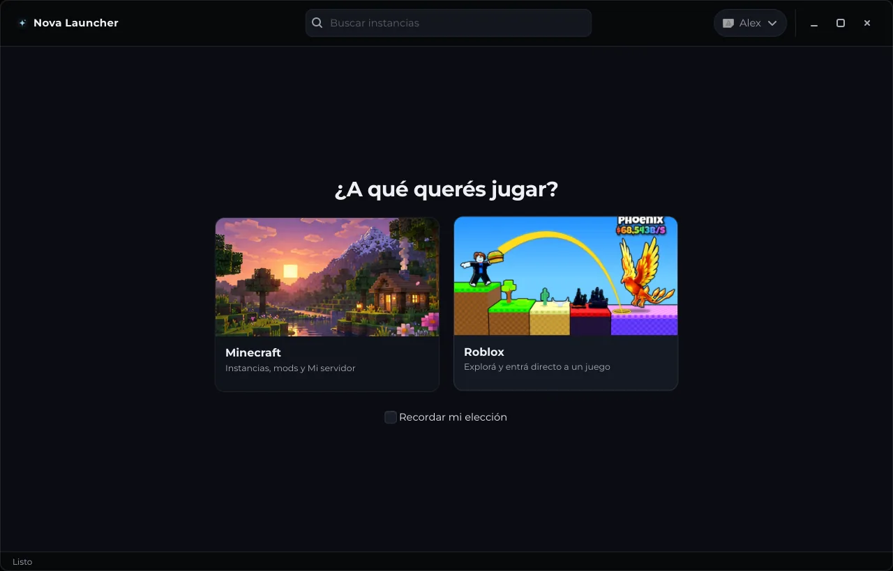
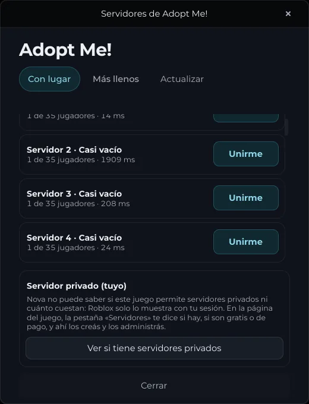
MI SERVIDOR
Tu propio servidor de Minecraft, gratis y desde Nova
Creá un servidor en tu PC para jugar con amigos: Vanilla, Paper, Fabric o Forge. Corre en tu computadora, no en la nube: solo está disponible mientras tu PC y el servidor estén encendidos. Nova no ofrece alojamiento.
Encendelo, mirá la consola y compartí la dirección
Encender, apagar y reiniciar con un clic, consola con comandos y la dirección lista para copiar: la de este equipo y la de tu red local, la que usan tus amigos si están en tu mismo wifi.
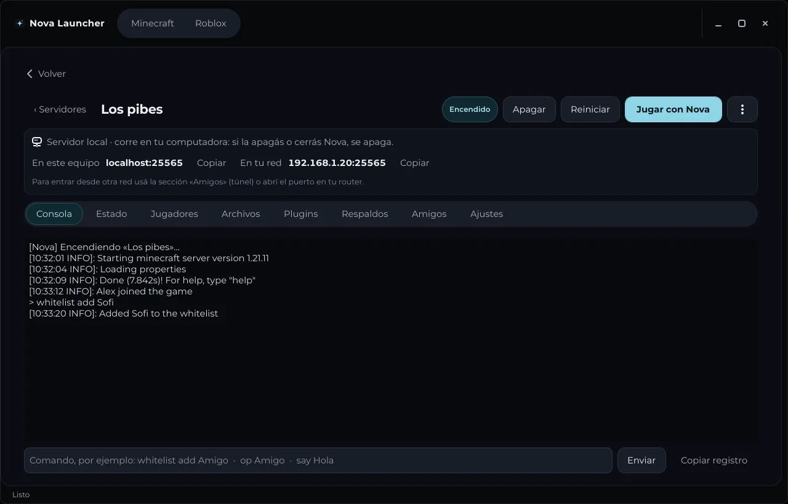
Plugins y mods con un clic
Un catálogo dentro de cada servidor. En Paper, plugins de Modrinth, de Hangar (con su suma SHA-256) y de SpigotMC; en Fabric y Forge, mods de Modrinth. Forge baja su propio Java verificado si tu PC no tiene uno.
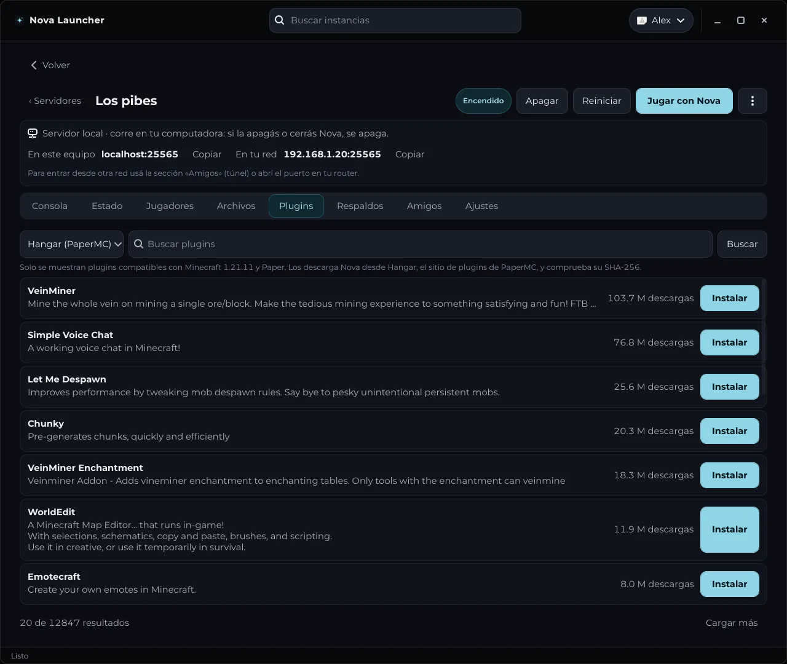
Respaldos y actualizaciones sin perder el mundo
Respaldos automáticos cada tantas horas, al apagar si querés, y restaurar cuando quieras. Al actualizar el servidor a otra versión, Nova guarda un respaldo antes.
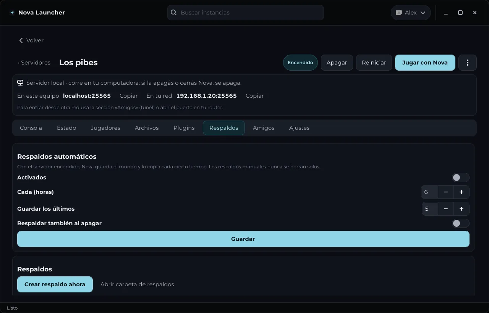
Quién juega y cómo va el servidor
Mirá quién está conectado y expulsalo si hace falta, dale permisos de operador y administrá la lista blanca. En Estado ves la memoria y el procesador en vivo.
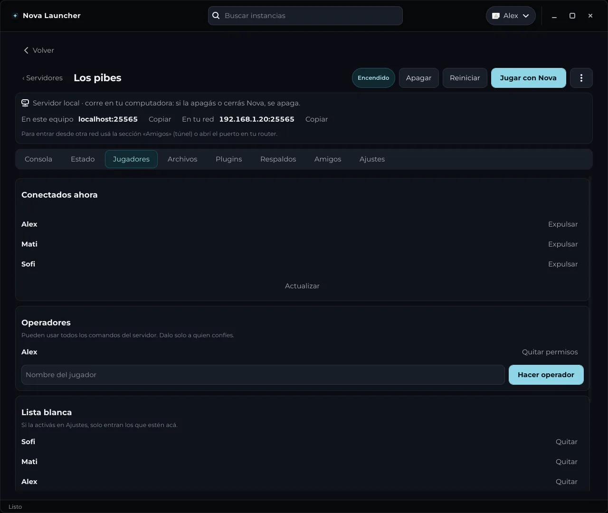
Amigos fuera de tu red, con un túnel opcional
Para que entren desde otra red podés abrir el puerto en tu router o usar el túnel de playit.gg. Es un servicio externo de terceros, con sus propias condiciones: Nova te lo explica y te pide aceptarlo antes de descargar su agente.
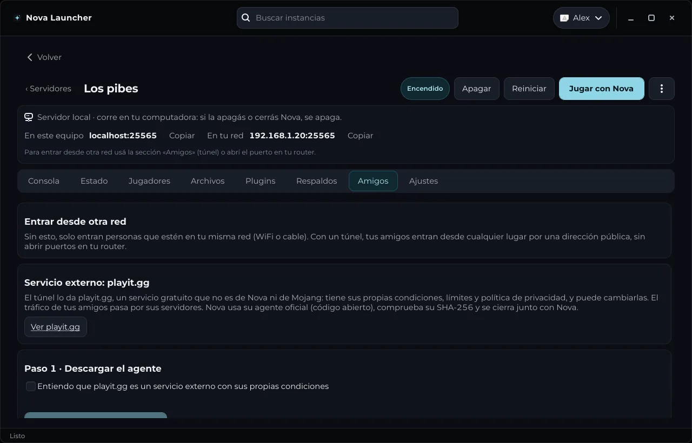
Importá el servidor que ya tenés
Nova detecta el tipo, la versión, el puerto y la memoria de una carpeta existente y la copia: la original no se toca. Después se maneja como cualquier servidor de Nova.
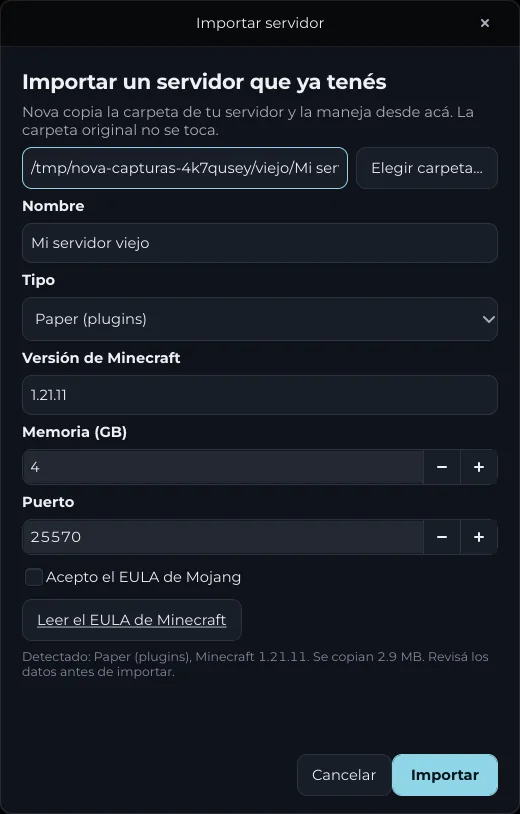
RUST
Minecraft también en Rust, sin dejar Java
Cada instancia puede usar Pomme, un cliente de Minecraft Java escrito en Rust. Java sigue siendo lo normal: Pomme es una opción más, y se elige por instancia en Editar instancia.
- Estado
- experimental: Pomme está en desarrollo y le faltan funciones
- Es de
- un proyecto independiente, no oficial (
PommeMC/Client, GPL-3.0) - Mods
- no usa mods, shaders ni texturas de Java
- Cuenta
- tiene su propio inicio de sesión de Microsoft y pide tener Minecraft Java
- Sistemas
- Linux x64 y Windows x64
- Nova te pregunta antes de descargarlo y lo baja de la release oficial en GitHub.
- Comprueba el tamaño y la suma SHA-256 que publica GitHub antes de abrirlo.
- El tiempo jugado cuenta igual que con Java y, si falla, queda un
pomme.log.
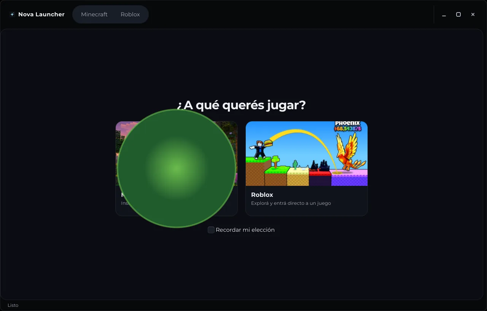
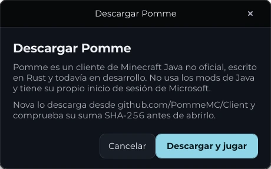
FUNCIONES
Todo lo que necesitás para jugar, en un solo lugar
-
Instancias separadas
Cada partida con su versión, cargador, RAM y Java. Plantillas para empezar rápido y perfiles que podés exportar e importar.
-
Mods sin vueltas
Buscá en Modrinth y, con tu propia clave, en CurseForge. Nova revisa dependencias, actualiza en lote y deja volver a la versión anterior.
-
Importá lo que ya tenés
Sumá mods, texturas, shaders y paquetes de datos desde archivos de tu equipo, o abrí un modpack. Nova revisa cada archivo antes de copiarlo.
-
Cliente Rust (experimental)
Elegí Pomme, un cliente de Minecraft Java escrito en Rust, para una instancia. Java sigue siendo lo normal y Nova pregunta antes de descargar nada.
-
Salud y mods
Lee los metadatos de tus mods y avisa de dependencias faltantes, cargador o versión incorrectos y duplicados. Solo marca lo que puede comprobar.
-
Respaldos verificados
Copias manuales o automáticas con suma SHA-256 por archivo. Verificá su integridad y restaurá como una instancia separada.
-
Servidores
Entrá directo con la versión y los mods de la instancia, y comprobá si el servidor responde antes de abrir el juego.
-
Mi servidor
Creá un servidor en tu PC con plugins o mods, respaldos automáticos, lista de jugadores y túnel opcional. Gratis y sin cuentas.
-
Roblox
Elegí a qué jugar al abrir, explorá juegos y abrilos directo con Sober en Linux o el cliente oficial en Windows y Mac.
-
Editor de skins
Pintá sobre la skin desplegada con vista 3D, guardala en tu biblioteca, traé la de cualquier jugador por su nombre y equipala en una instancia compatible.
IMPORTAR
Importá lo que ya tenés en tu equipo
Elegí los archivos o arrastralos a la ventana. Nova mira dentro de cada uno, te dice qué es y a qué instancia va, y solo entonces lo copia.
- Mods
.jarde Fabric, Quilt, Forge o NeoForge- Texturas
.zipconpack.mcmeta- Shaders
.zipcon la carpetashaders- Datos
- paquetes de datos para un mundo de la instancia
- Modpacks
.mrpacko ZIP de CurseForge, como instancia nueva
- Avisa si un mod es de otro cargador o si la instancia es Vanilla.
- Nunca pisa un archivo: si ya está, lo omite; si cambió, guarda una copia numerada.
- Copia por pasos, así que una interrupción no deja archivos a medias.
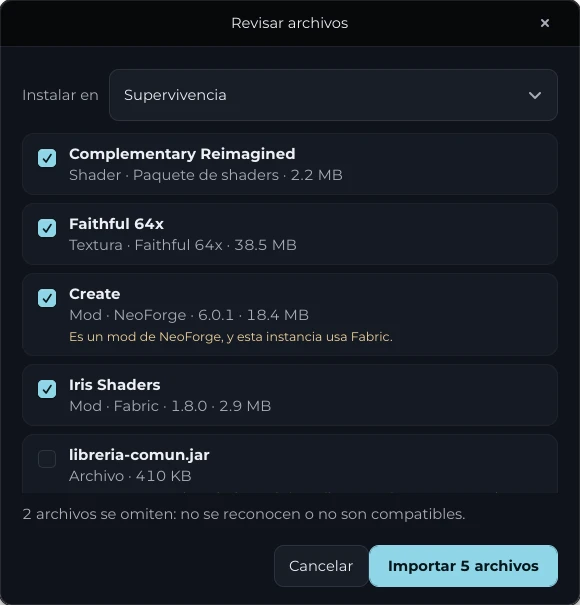
EN DETALLE
Capturas reales de Nova
Arrastrá y soltá
Soltá archivos sobre la ventana y Nova los revisa en el momento. También podés usar el botón Importar de cada estante, o Ctrl + O.
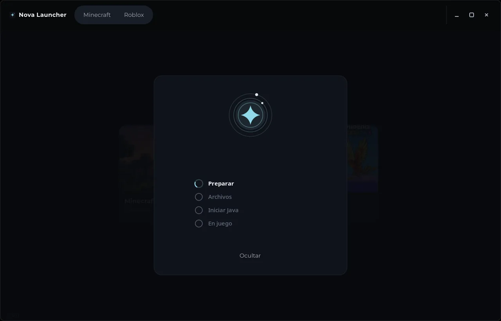
Ajustes claros, sin pestañas
Nombre, portada, versión, memoria y Java en secciones. El formulario se desplaza solo y los botones Guardar y Cancelar quedan siempre a la vista.
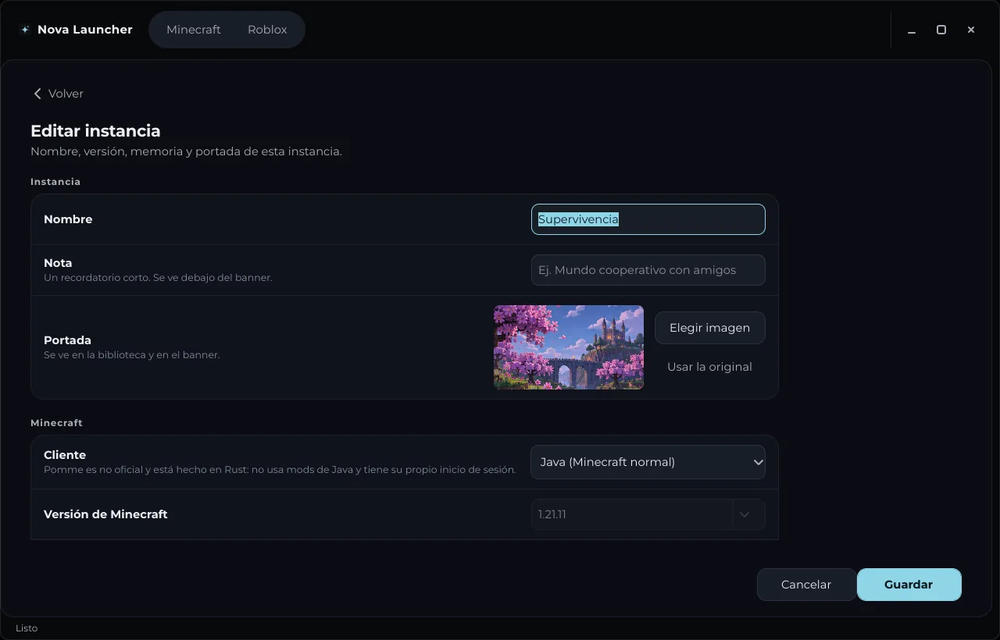
Empezá desde una plantilla
Supervivencia, PvP, rendimiento, creativo y más. Completan el formulario con ajustes razonables y no asignan más de la mitad de tu RAM.
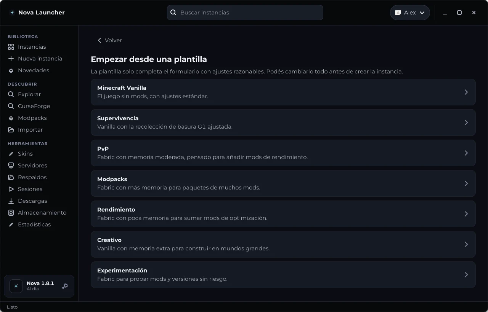
Un editor de skins con vista 3D
Pintás sobre la skin desplegada, con cada parte y la capa exterior marcadas, y ves el resultado girando en 3D. Tiene lápiz, borrar, gotero, relleno, simetría, paleta y deshacer; una biblioteca con miniaturas; y «De un jugador» trae la skin de cualquiera por su nombre. Abre también las skins antiguas de 64 × 32.
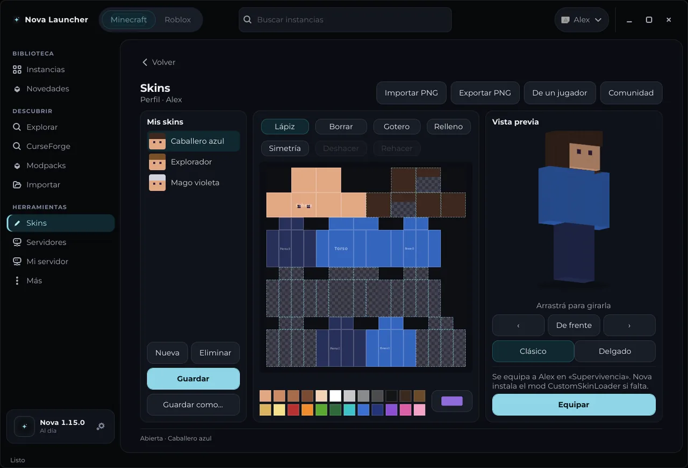
Una pantalla de inicio cuando abrís Minecraft
Al tocar Jugar, Nova muestra el avance real: preparar, archivos, iniciar Java y en juego, con el logo animado. Se va sola cuando Minecraft abre y, si algo falla, te dice el motivo. Se apaga en Ajustes.
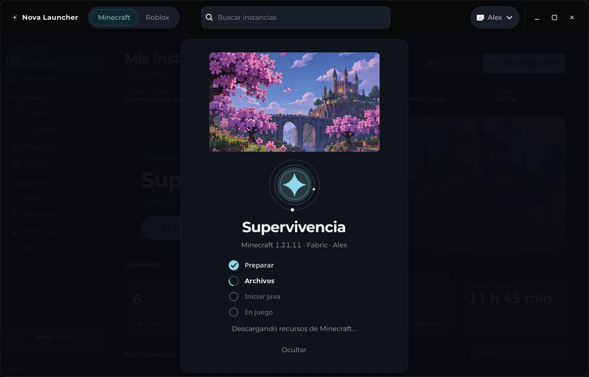
Actualizaciones en segundo plano, si querés
Actívalas en Ajustes. Nova descarga la versión nueva mientras la usás y comprueba su SHA-256; instalarla es un clic y no instala nada sola. Si no las activás, Nova solo te avisa.
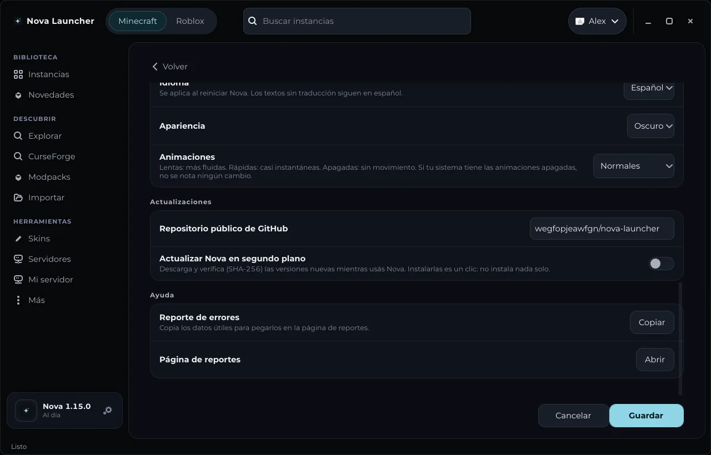
Una interfaz nueva, oscura o clara
Un marco nocturno con un panel redondeado, el selector Minecraft/Roblox arriba y una barra lateral más corta: lo menos usado queda detrás de «Más». Elegí el tema claro en Ajustes si lo preferís.
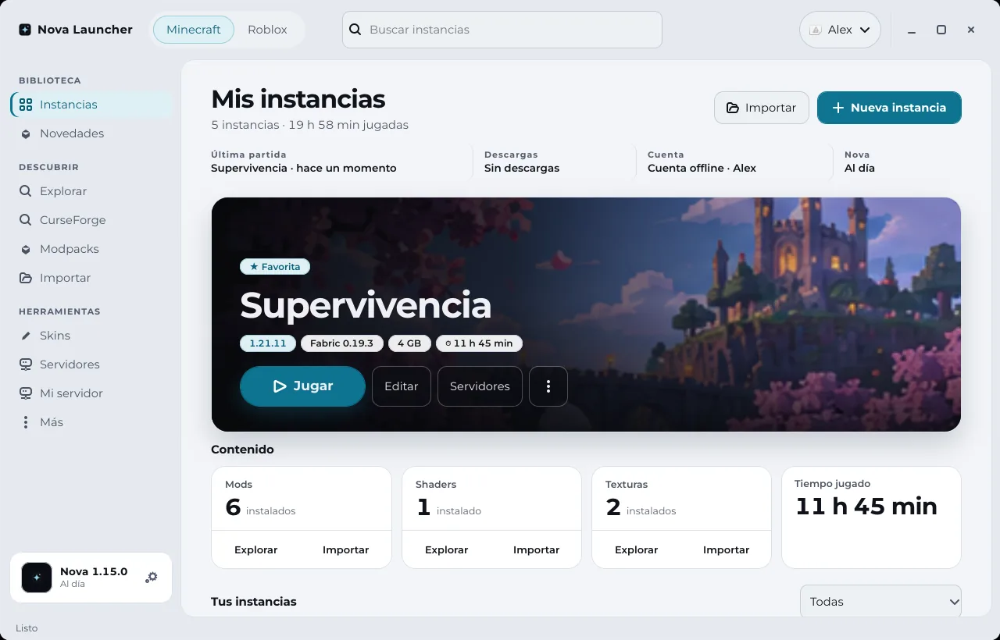
Una entrada con estrella saltarina
Al abrir Nova, su estrella cae, rebota y deja un destello antes de que la interfaz se arme. Al elegir Minecraft o Roblox, el color del juego se expande desde donde tocaste y cambia la pantalla. En Ajustes → Animaciones las ponés lentas, normales, rápidas o apagadas; si tu sistema las desactiva, Nova tampoco anima.
INSTALACIÓN
Instalá Nova
Fedora
Descargá el RPM y ejecutá este comando donde lo guardaste. Después abrí Nova Launcher desde el menú de aplicaciones.
Windows x64
Descargá el instalador, abrilo y buscá Nova Launcher en Inicio. Como el instalador no está firmado, Windows puede mostrar una advertencia: comprobá la suma SHA-256 antes de continuar.
sudo dnf install "$(xdg-user-dir DOWNLOAD)/nova-launcher-1.16.0-1.noarch.rpm"sudo dnf install ./nova-launcher-1.16.0-1.noarch.rpmRPM sin firma. El primer arranque de Minecraft descarga los archivos del juego.
PREGUNTAS
Lo que suelen preguntar
¿Es un launcher oficial de Minecraft?
No. Nova es un proyecto de terceros, sin afiliación ni aprobación de Mojang, Microsoft ni Roblox. Minecraft y Roblox son marcas de sus titulares.
¿Nova se actualiza sola?
Solo si lo activás en Ajustes → Actualizaciones. Entonces descarga la versión nueva en segundo plano y comprueba su SHA-256 contra el que publica la release. Instalarla es un clic: en Fedora te pide autorización al sistema y en Windows corre el instalador sin ventanas y abre Nova de nuevo. Nova no instala nada sola y vuelve a comprobar el archivo justo antes de instalar. Todavía no se probó la instalación automática en Windows.
¿Puedo jugar Roblox desde Nova?
Nova abre el juego que elijas, o la partida de un amigo de tu lista, con el cliente de Roblox; no corre Roblox por su cuenta. En Linux usa Sober, un cliente no oficial que tenés que instalar; en Windows y Mac usa el cliente oficial. Iniciás sesión ahí: Nova no pide ni ve tu contraseña. Todavía solo se probó en Fedora con Sober.
¿«Mi servidor» es un hosting gratis?
No. El servidor corre en tu computadora: si la apagás o cerrás Nova, se apaga. Gasta memoria y procesador mientras se juega. Tus amigos entran por tu red local, abriendo el puerto en tu router o con el túnel opcional de playit.gg, un servicio de terceros con sus propias condiciones.
¿Puedo jugar sin cuenta de Microsoft?
Con Java, sí, con perfiles sin conexión. Con Pomme no: pide una cuenta de Microsoft y tener Minecraft Java. El inicio de sesión con Microsoft necesita un ID de aplicación aprobado para Minecraft Services; todavía no se probó de punta a punta.
¿Qué es Pomme y es seguro usarlo?
Pomme es un cliente de Minecraft Java escrito en Rust, de un proyecto independiente (PommeMC/Client, GPL-3.0-or-later). Nova lo descarga de su release oficial y comprueba el tamaño y la suma SHA-256 que publica GitHub. Eso confirma que es el archivo de esa release; no garantiza que el programa esté libre de errores. Sus propios autores avisan de que está en desarrollo y que sus instaladores todavía no están firmados.
¿Qué es la cuenta Nova?
Es la cuenta de Nova Studios, la misma de Nova Music. Desde el menú Cuentas podés iniciar sesión con Nova: se abre el navegador, aprobás un código y volvés. La contraseña nunca pasa por el launcher. No es una cuenta de Minecraft y el launcher no tiene planes de pago.
¿Qué pasa con los archivos que importo?
Nova los copia tal cual a la carpeta de la instancia; no los modifica ni los descomprime. Si un archivo no se reconoce o no es compatible, te lo dice y no lo copia. Lo que ya estaba instalado nunca se pisa.
¿Dónde se guardan mis datos?
En tu computadora: ~/.local/share/nova-launcher en Fedora y %LOCALAPPDATA%\nova-launcher en Windows. Las estadísticas no salen de tu equipo y las contraseñas no se guardan.
¿Cómo sé que el instalador es el original?
Cada archivo de la release tiene su suma SHA-256. Nova también verifica la suma de las actualizaciones que descarga. Los instaladores todavía no tienen firma de código.
En Windows, antes de abrirlo ejecutá en PowerShell Get-FileHash .\nova-launcher-…-windows-x64-setup.exe -Algorithm SHA256 y comprobá que el resultado coincide con el archivo .sha256 de la release. Si coincide y SmartScreen avisa, elegí «Más información → Ejecutar de todos modos».
¿Es de código abierto?
Sí. Nova es software libre bajo la licencia GPL-3.0-or-later: podés usarlo, estudiarlo, modificarlo y compartirlo, y las versiones modificadas que distribuyas deben mantener la misma licencia. Los avisos de las dependencias están en THIRD_PARTY_LICENSES.md.
¿Dónde pido ayuda o reporto un error?
En GitHub. Desde Ajustes podés copiar un reporte sin datos personales.